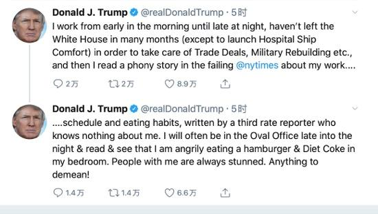
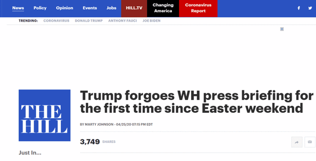
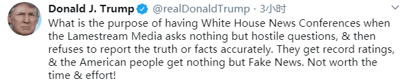

Continuing to resent "fake news," trump said he was the most diligent president in history, and the briefing was not worth it
I didn't know, but I'm really a hard-working person, and probably accomplished more work in the first three and a half years than any other president in history。”
On April 26, local time, the white house failed to hold a daily epidemic briefing for the second day in a row, but this did not affect the "information release" of US President trump. On the afternoon of April 26, trump released several tweets, continued to resent "false news", and said that some people said he was "the most diligent president in history". The day before, trump tweeted that "the briefing is not worth the time and effort."。
Trump wrote that day: "people who know me and know the history of our country say that I am the most diligent president in history. I didn't know, but I'm really a hard-working person, and probably did more work in the first three and a half years than any other president in history. Fake news (media) hate this!”

Screenshot of Trump's Twitter
He went on to write, "I've been working from morning to night, and I haven't left the White House for months to take care of trade agreements, military reconstruction, etc. (except to see off for the Navy hospital ship comfort), and then I read a false story about my work schedule and eating habits in the failed New York Times by a third rate journalist who didn't know me Written. I often go to the oval office late at night, read books, eat hamburgers and drink diet coke in my bedroom. People with me are always shocked. What's wrong with that!

Screenshot of Trump's Twitter
Trump tweet: the briefing is not worth it!
The White House did not hold a briefing on the epidemic. On that day, trump tweeted: it's not worth the time and effort!
Trump did not hold a press briefing with the new coronavirus response task force at the White House on Saturday for the first time since the end of Easter (April 12), which may indicate a change in the frequency of the president's appearance in the coming weeks, the Capitol Hill reported on the 25th.

Screenshots of reports from Capitol Hill
The report said that novel coronavirus pneumonia and Trump, vice president Burns, have held nearly 50 White House news briefings since March, and have informed the government about the continuous response measures of the government to the new crown pneumonia epidemic. However, the 25th briefing was not held as usual. It is worth mentioning that the previous day's briefing was also "exceptionally short", lasting about 25 minutes. It is reported that Trump's briefing last Friday lasted about an hour and 45 minutes.
U.S. News website Axios on Friday (24) quoted sources as saying that trump plans to shorten the duration of the briefing and reduce the number of appearances. Political news website politico reported that the White House coronavirus response working group may have held a private meeting, but did not hold a briefing.
"Capitol Hill" noted that the shortening of the duration of the briefing and the absence of a briefing on the 25th were all after Trump's controversial remarks on Thursday (23rd).
At a briefing on the 23rd, Bill Blaine, a senior official with the Department of Homeland Security (DHS) bureau of science and technology, said that sample experiments showed that (certain) sunlight, high temperature or humidity conditions were not conducive to virus (breeding). Brian also said the disinfectant killed the coronavirus in five minutes and isopropanol killed the virus in 30 seconds.
Later, trump said: "the disinfectant killed it in a minute. Is there a way that we can do something like that through injection or cleaning Try it out. It can be fun.”
Trump's remarks about "injection disinfectant" have since aroused doubts from some medical experts. White House spokesman and trump himself came forward to explain on the 24th that trump said he was just expressing "irony". However, the US public opinion did not buy it and put forward evidence in succession, stressing that the president was serious when he put forward this proposal.
On the afternoon of the 25th local time, White House press secretary Kelly mcnani briefly talked about this topic, but did not further disclose whether the briefing will stop or decrease. "Listen, I leave this to the president, it's entirely his decision, but I believe that when the president speaks directly to the American people, he is in the best shape."
According to Capitol Hill, about 45 minutes after mcnani's voice, trump also tweeted his views on the briefing.
Trump wrote, "what is the purpose of a White House press conference when bad media only ask hostile questions and then refuse to report the truth and accurate facts?" "They get record ratings, and Americans get nothing but fake news. It's not worth the time and effort!”

（Screenshot of Trump's Twitter）
Source: integrated global network